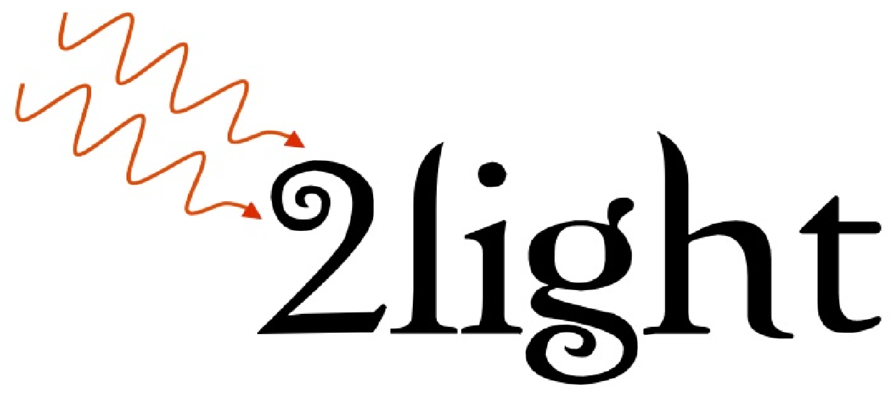

Developped softwares
| Octopus - is a scientific program aimed at the ab initio virtual experimentation on a hopefully ever-increasing range of system types. Electrons are described quantum-mechanically within density-functional theory (DFT), in its time-dependent form (TDDFT) when doing simulations in time. |
|
| 2light - is an ab initio code based on Time-Dependent Density Functional Theory code for Second Harmonic Generation. |  |